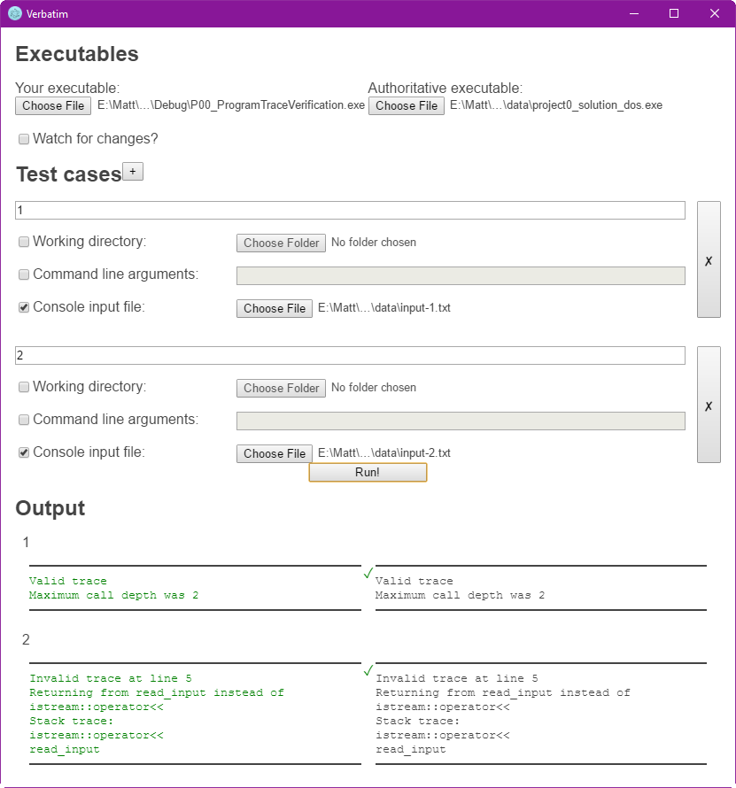

Description
Verbatim runs two programs against a series of test cases and ensures that they give the same output.
Screenshot

Usage
Download Verbatim. Point it at the executables and test cases. (If you need to, you can provide a working directory and command line arguments.) Check the "Watch for changes?" box to watch your executable for changes. Click "Run" to run the test cases.
The test cases will be sent to stdin for each program. If you chose to watch for changes, the tests will be rerun when your executable changes.